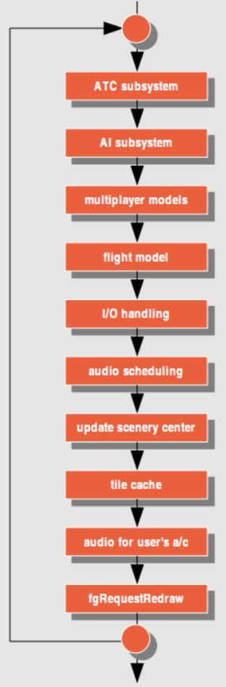
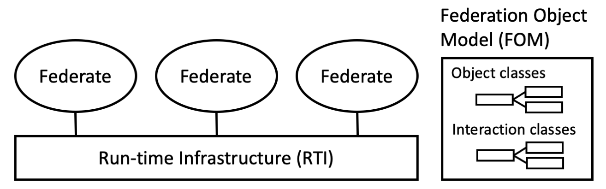

FlightGear技术分析
FlightGear是一个始于1997年多平台飞行模拟器、开源软件项目[1]。该项目适用的操作系统主要包括Linux、Microsoft Windows和Mac OS X，采用C++编写。
FlightGear体系结构
当前体系结构
FlightGear体系结构基于一个名为“主循环”的无限循环[2]。其流程图如图1所示。在主循环中将依次完成如下工作:
- ATC模拟
- 控制AI对象
- 在多用户环境中更新其他飞机
- 飞行动力学计算
- 风景更新
- 音频调度
- 渲染

高级体系结构
FlightGear正在支持高级体系结构(High Level Architecture, HLA)[3][4]。
HLA简介
高级体系结构（HLA）是分布式仿真的标准，用于通过组合（联合）多个仿真来构建用于更大目的的仿真。该标准是在美国国防部的领导下于90年代开发的，后来转变为开放的国际IEEE标准。它是北约通过STANAG 4603推荐的标准。今天，HLA被用于许多领域，包括国防和安全以及民用应用。该体系结构指定以下组件：
- 运行时基础结构（RTI），通过不同的编程语言提供标准化的服务集。这些服务包括信息交换，同步和联合管理
- 联邦成员（Federates）是使用RTI服务的单独仿真系统，由多个联邦成员对象构成。
- 联邦成员对象模型（FOM），指定用于交换数据的对象类和交互类。 FOM可以描述任何域的信息。

HLA标准由三部分组成：
- IEEE Std 1516-2010框架和规则，它规定了组件或整个联合应遵守的十个体系结构规则。
- IEEE Std 1516.1-2010联邦接口规范，规定了RTI应提供的服务。这些服务以C ++和Java API以及Web服务的形式提供。
- IEEE Std 1516.2-2010对象模型模板规范，它规定了HLA对象模型（如FOM）应使用的格式。
HLA优势
与单机仿真相比，这有三大优势[5]（例如FlightGear V3.6）：
- 它提供了一个强大的环境，使模拟器具有多线程，利用具有多个内核的计算机，或者在不同的计算机（甚至包括不同的平台和操作系统）上运行模拟的不同部分。
- 它允许我们分离模拟器的部分，如AI（通过解耦AI交通系统）、FDM、Nasal脚本和渲染器，以及较少时间关键的子系统，如天气，这样我们就可以获得一致（也许更高）的帧速率（即减少Nasal垃圾收集对帧速率的影响）。
- 它提供了一个非常好的框架，允许任何人使用除C / C ++之外的编程语言（想想Ada，Java，Python等）创建与FlightGear交互的组件，这些编程语言可能在他们自己的线程中运行，并且驻留在单独的二进制文件中，这也更容易调试/排除故障（想想回归测试，即在专用的gdb / valgrind会话中运行一个自包含的子系统），而不必知道如何修改/补丁和重建FlightGear。
FlightGear组件构成
FlightGear由很多开源组件或程序构成[6]，具体包括：
RTI
RTI是HLA架构的关键组件，相当于中间件。
OpenRTI
OpenRTI是一个包含了rti 1.3、rti 1516、rti 1516e标准接口实现的rti库。OpenRTI有如下关键特性：
- 易用性高，非常便于使用；
- 直接提供C++调用接口，也可以提供Java接口，但目前还没有编码实现；
- 可扩展性强；
- 一直在维护中的RTI开源项目；
- 树状的服务器结构；
- 最短路径在内存中不拷贝数据；
- 不依赖其它项目，仅仅需要C++编译器，特别的不需要boost；
- 支持线程间通信、rti通信和管道间通信，未来可能支持http通信；
- 到处都可以运行，能够在Linux、Win32、MacOS和Solaris上运行。
FDM
飞行动力学模型（Flight Dynamics Model, FDM）是模拟器内控制飞机物理飞行的数学模型。飞机的3D模型实质是一张图片，其与飞行动力学无关，本质上由FDM控制飞机如何飞行。在FlightGear中主要使用JSBSim和YASim两个飞行动力学模型。
JSBSim
JSBSim是一个用C++实现的开源跨平台飞行器动力学模型软件。Flightgear也采用了JSBSim作为其中的飞行器动力模型之一。同时JSBSim也可以作为一个单独的动力学模型软件进行运行。
YASim
YASim使用飞机的几何形状生成基本飞行特征。虽然这表明了一种“现实的”或开箱即用的方法，但在获得接近现实主义的结果之前，这只是一种粗略的近似，需要进行大量的调整。如果您的飞机有稳定的飞行数据，例如风洞数据，或者您希望最终生成超逼真的模拟，那么JSBSim可能是更好的方法。 如果你缺乏这样的数据但是知道飞机的几何形状并且能够获得与真实飞行员相同的飞行特性和限制，那么YASim可以提供足以满足大多数模拟需求的解决方案。
Atlas
Atlas旨在为FlightGear（一种开源飞行模拟器）的用户制作和展示世界高质量的图表。 这是通过两个主要部分实现的：地图创建者（简称为Map）和Atlas查看器。
- 地图创建者从FlightGear获取风景数据并将其转换为漂亮的地图图片，可以使用您可能已安装的任何位图图像程序或使用Atlas查看应用程序查看。
- Atlas查看应用程序可用于浏览您的地图，但也可以直接连接到FlightGear，并在所谓的移动地图显示上显示您的飞机当前位置。
FlightGear Multiplayer Server
FGMS或FlightGear多人游戏服务器是FlightGear的独立网络服务器，并根据GPL许可。它允许通过FGFS内的网络与其他飞行员一起飞行。
可以在服务器配置中配置的服务器列表类型：
- 中继服务器 - 网络中的其他服务器。 每个都必须有完整的列表（减去自己）以获得适当的网络功能。
- 交叉馈送服务器 - 服务器从本地用户和其他服务器接收的所有内容都将转发到交叉馈送服务器。 用于在同一主机上运行多个连接的fgms实例，例如 用于提供跟踪和未跟踪服务，而不会产生额外的外部流量。
- 跟踪器 - 服务器每10秒向跟踪器发送一个每个本地用户的摘要更新。
- HUB - 通常服务器不会将从服务器接收的数据包发送到其他中继。 HUB服务器将数据从服务器发送到它知道的所有中继。
FGCOM
FGCom是一种语音通信功能。这样您就可以在飞行途中与其他飞行员和空域管制员进行通信。
主要思想是重现真实的航空通信，换句话说，此功能旨在使您的航班期间尽可能真实地进行无线电通信。
FGCom有两种方式：
集成到FlightGear（FGCom内置）：这当然是更好的解决方案，因为更容易使用
外部软件（FGCom standalone）：只有在计划在特殊情况下使用FGCom时才应使用此软件
MPmap
MPMap是一个实用程序，可以在世界地图上显示在FlightGear世界中飞行的飞机。 除此之外，它还提供对导航数据的访问，例如ILS频率，跑道号和修正。由于它使用谷歌地图，人们可以选择地图或卫星视图。
SimGear
SimGear是FlightGear使用的一组开源软件库。该项目仍在开发中，但其目标是成为“仿真内核”，并由其他非FlightGear项目使用。该项目于2000年启动。SimGear与FlightGear和TerraGear一样，需要PLIB进行构建。
SimGear是一个仿真架构工具集(simulation construction tools)，是FlightGear的仿真引擎，完成了数据结构操作、星历计算、模拟天空、坐标系转换等大部分的工作，它也是一个开源库。
PLib
PLIB（便携式游戏库）是由Steve J. Baker编写的一套用于编写游戏的软件库。 FlightGear在其大部分开发中使用了PLIB。 它也被FlightGear相关程序Atlas使用。 PLIB是开源的，并且是在GNU Library General Public License下发布的。
FlightGear 1.0（2007年发布）是在向OpenSceneGraph（OSG）过渡之前使用PLIB进行3D场景图的最后一次公开发布。 FlightGear仍然使用PLIB执行各种任务; 例如，读取操纵杆输入并显示图形用户界面（GUI）。 在后一种用法中，PLIB的PUI组件最终将由Canvas和Phi在FlightGear中替换，这将极大地改善当前GUI的功能，超出PUI提供的功能。
构建FlightGear时需要PLIB。
OSG
OSG是OpenSceneGraph的缩写，OpenSceneGraph图形系统是一个基于工业标准OpenGL的软件接口，它让程序员能够更加快速、便捷地创建高性能、跨平台的交互式图形程序。相比于工业标准OpenGL或者其他图形库，OpenSceneGraph的优点明显，除了程序开源和平台无关性以外，其封装并提供了数量众多的提升程序运行时性能的算法、针对包括分页数据库在内的几乎所有的主流数据格式的直接数据接口、 以及针对脚本语言系统Pthyon和Tcl的支持。
OpenGL是Open Graphics Library的缩写，其独立于硬件，独立于窗口系统，在运行各种操作系统的各种计算机上都可用，并能在网络环境下以客户/服务器模式工作，是专业图形处理、科学计算等高端应用领域的标准图形库。
场景相关工具
TerraSync
要查看飞机下方的地形，您必须安装相应的风景。这可以通过在安装风景的文章中描述的在飞行之前下载某些景点来实现。
或者，如果您有稳定且相当快速的互联网连接，则可以使用TerraSync。它是一个实用程序，可在模拟器运行时自动下载所需FlightGear场景的最新版本。 TerraSync在后台运行（可选择作为单独的进程），监视您的位置，并从“主时间”服务器“及时”下载（或更新）最新的场景。一段时间以来，TerraSync已经集成到核心FlightGear流程中，因此不需要为典型用户处理TerraSync。
TerraSync的主存储库，即TerraSync从中下载文件的在线资源，每天与FlightGear Scenery数据库同步一次。因此，当使用TerraSync时，您将永远拥有
- 最新的.stg文件，告诉FlightGear放置对象的位置
- 最新的对象静态模型。 （静态模型定义仅存在于一个地方的唯一对象，例如着名的建筑物或地标。）
- 最新的对象共享模型。 （通用模型在不同的地方使用不止一次，每个都可以代表许多不同的对象，如通用房屋或船舶）
TerrGear
TerraGear是开源工具和渲染库的集合，可以在地球的3D表示（即3D模型或3D地图）中转换公开可用的GIS数据，以用于实时渲染项目。 TerraGear可以导入3D数据集，例如DEM地形网格，2D多边形数据集（如海岸线，城市轮廓，湖泊轮廓）和2D栅格数据集，例如1 km NAOO土地利用/土地覆盖数据。它还具有基于可用的FAA数据生成逼真的机场，跑道和照明的工具。
TerraGear是用于为FlightGear项目生成场景的主要工具。
如果没有terragear，可以更改Terrain纹理，但不能更改地形。如果要更改城市的纹理，请更改材质文件。如果你想改变海岸线，你需要terragear。检查目录FGDATA/Material中的材料文件，你需要terragear。
FlightGear事件处理
参考链接
- FlightGear,by wikipedia.
- A NEW ARCHITECTURE FOR FLIGHTGEAR FLIGHT SIMULATOR,by flightgear.
- FlightGear high-level architecture support,by flightgear
- Developing with HLA,by flightgear.
- High-Level Architecture,by flightgear.
- High-level architecture,by wikipedia.
- FlightGear related projects,by wikipedia.
- OpenRTI,by openrti.
- JSBSim,by wikipedia.
- YASim,by flightgear.
- JSBSim vs YASim,by flightgear.
- Atlas,by atlas.
- FGCom 3.0,by wikipedia.
- FlightGear Multiplayer Server,by flightgear.
- SimGear,by flightgear.
- PLIB,by flightgear.
- OSG,by flightgear.
- Flightgear操作方式以及几种典型飞机的起飞方法,by Mosquito_蚊子.
- Sentry的使用,by KJxiaoxiao.